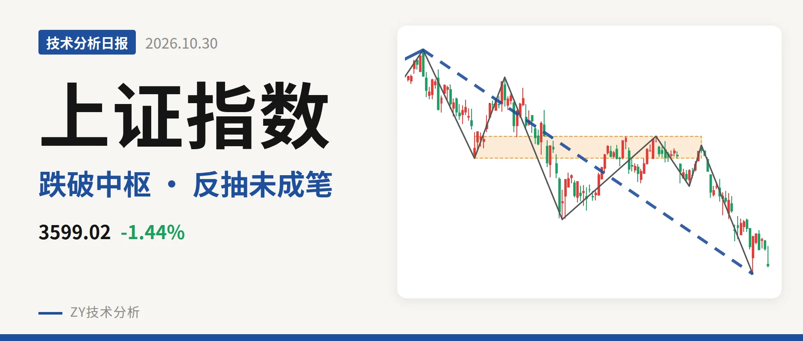
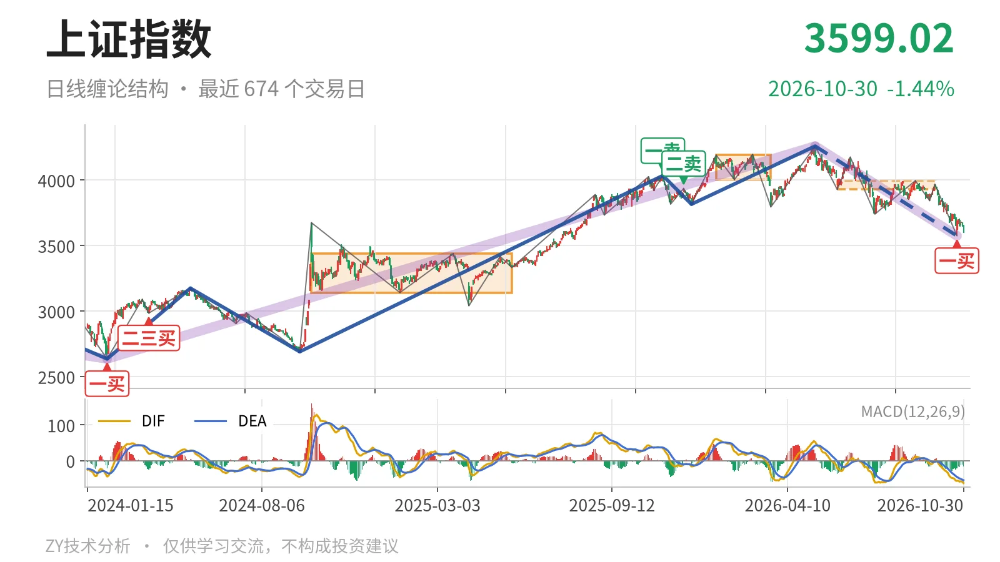
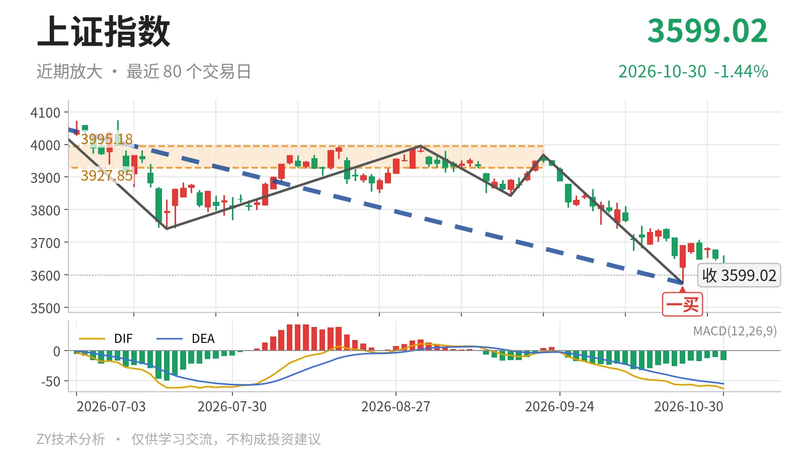

上证指数｜中枢下移失守3928，反抽三日未成笔

最近日线中枢 3927.85—3995.18点，收盘位于中枢之下
一句话：日线失守最近中枢下沿，反抽未及3928点，结构偏弱。
📉 走势结构：更大级别上涨未坏，日线下跌段仍在延续
自2024年2月5日2635.09点至2026年5月14日4258.86点的上涨走势尚未走完，当前只能看作这段上涨中的大幅回落。日线线段上，5月14日至10月23日的下跌段从4258.86点落到3574.27点，跌约16.1%，内含7笔，至今没有结束。10月23日见3574.27点低点后，10月26日至30日反弹到3708.20点、再回到3599.02点，这5根K线尚未构成反向笔。也就是说，下跌段只是被一次未成笔的反弹打断，结构上仍处下跌线段中。

🧭 中枢与位置：跌破最近日线中枢，且中枢在下移
最近一个日线笔中枢为6月8日至9月22日的3927.85—3995.18点，中轴3961.51点，尚未完成。最新收盘3599.02点低于中枢下沿3927.85点约8.4%，距下沿约329点。之前1月14日至3月23日的中枢在4002.78—4190.87点，两段比较，中枢明显下移。更早的线段中枢2021年7月28日至2023年5月9日区间3312.72—3418.95点，当前指数仍在其上沿3418.95点上方。眼下日线结构是从中枢内运行跌到中枢下方，不是中枢震荡。
📌 买卖点：10月23日一买未破坏，未升级为线段级
日线笔级别买卖点中，最近是10月23日一买3574.27点，所在笔9月22日至10月23日下跌笔已经结束。10月26日至30日最低3595.26点，没有击穿3574.27点，因此该一买结构上仍有效。不过之后的反弹连最近中枢下沿3928点都未触及，尚未形成反向笔，所以这个一买只是日线笔级别的修复点，不足以直接扭转5月14日以来的日线线段下跌。上方2025年11月14日一卖4034.08点与2025年12月8日二卖3936.31点一个比一个低，也说明反弹重心没有抬高。

⚖️ 背驰：最后一跌是“新低更弱”，未见力竭
比较最近两次日线下跌笔：9月1日至9月16日下跌笔绿柱面积52，DIF低点-8.0；9月22日至10月23日下跌笔绿柱面积347，DIF低点-57.1。价格由3842.72点进一步下探到3574.27点，创新低同时绿柱面积反而放大到347，DIF低点也大幅下行。最新DIF已到-63.3，低于-57.1，下行力度未收敛。这不是“新低不新弱”，而是下跌力度继续放大。日线笔级别没有出现下跌力度衰竭，因此10月23日一买背后缺少日线级别背驰支撑，只能作为结构点观察。
🔍 关键位置观察：反抽看3928点，失守3419点再升级
上方最近日线中枢下沿看3928点附近。10月26日至30日反抽最高3708.20点，距该下沿还差约220点。后续反抽若回不到3928点上方，结构上就构成日线三卖。重新站上3962点附近，则下跌更可能是中枢扩展而非单边下行。下方看2021年线段中枢上沿3418.95点一带，若后续跌破3419点，回落将进入更高级别中枢，调整结构再升一级。总体看，日线结构偏弱，弱在失守最近中枢下沿、反抽未触及3928点、下跌绿柱面积仍在放大。
⚠️ 本文为基于公开行情数据的缠论技术结构记录，由程序自动计算并生成，仅供学习交流，不构成任何投资建议。市场有风险，投资需谨慎。